JEE Main 2023 (Session 2), 10 Apr Shift 2: worked solutions for review
Questions and options are NTA’s own images; the green option is NTA’s final key. Every solution below was written by Claude
and checked against NTA’s final key. It is not NTA’s solution. Please mark anything unclear or wrong.
Q1 · Mathematics · MCQ · ID 7155054132
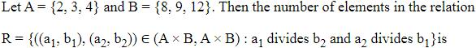
(1) 
(2) 
Hint 1: The two conditions are independent: one links a1 with b2, the other a2 with b1.
Hint 2: Count pairs (a, b) with a | b first.
What this tests: Counting elements of a relation
1. a | b: 2 | 8, 12; 3 | 9, 12; 4 | 8, 12: 6 pairs.
2. (a1, b2) and (a2, b1) are chosen independently: 6 × 6 = 36.
Answer: (4)
If this felt hard: Revise Relations and Functions.
Claude’s answer: 4 · NTA final key: 4 · agrees · Answer recomputed by script (tools/verify_pyq_solutions.py)
Q2 · Mathematics · MCQ · ID 7155054133
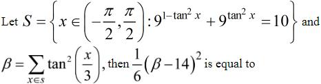
(1) 
(4) 
Hint 1: Put u = 9tan^{2x}.
Hint 2: 9/u + u = 10 gives u = 1 or 9, so tan2x = 0 or 1.
What this tests: Exponential equations in trigonometry
1. x = 0, ±π/4.
2. β = 0 + 2tan2(π/12) = 2(2 − √3)2 = 14 − 8√3.
3. (β − 14)2/6 = 192/6 = 32.
Answer: (3)
If this felt hard: Revise Trigonometric Functions (tan 15°).
Claude’s answer: 3 · NTA final key: 3 · agrees · Answer recomputed with SymPy (tools/verify_pyq_solutions.py)
Q3 · Mathematics · MCQ · ID 7155054134
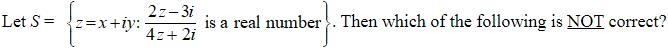
Hint 1: A quotient is real when its imaginary part is 0. Multiply by the conjugate of the denominator.
Hint 2: Imaginary part ∝ −16x.
What this tests: Real quotients
1. x = 0, and the denominator must not vanish, so (x, y) ≠ (0, −1/2).
2. Then y + x2 + y2 + 1/4 = (y + 1/2)2 ≠ 0: true.
3. (x, y) = (0, −1/2) is NOT allowed.
Answer: (4)
If this felt hard: Revise Complex Numbers.
Claude’s answer: 4 · NTA final key: 4 · agrees · Answer recomputed with SymPy (tools/verify_pyq_solutions.py)
Q4 · Mathematics · MCQ · ID 7155054135
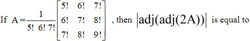
Hint 1: Take 5!, 6!, 7! out of the rows of the determinant.
Hint 2: |adj(adj B)| = |B|4 for 3 × 3; |2A| = 8|A|.
What this tests: Determinants of adjoints
1. The determinant of the factorial matrix = 5! 6! 7! × det[[1, 6, 42], [1, 7, 56], [1, 8, 72]] = 5! 6! 7! × 2, so |A| = 2.
2. |2A| = 16 = 24.
3. |adj(adj 2A)| = (24)4 = 216.
Answer: (2)
If this felt hard: Revise Determinants.
Claude’s answer: 2 · NTA final key: 2 · agrees · Answer recomputed with SymPy (tools/verify_pyq_solutions.py)
Note: Teacher look: NTA's key takes |A| = 2, i.e. the factor 1/(5! 6! 7!) divides the determinant once. Read strictly as a scalar times a 3 × 3 matrix, |A| = 2/(5! 6! 7!)^{2}.
Q5 · Mathematics · MCQ · ID 7155054136
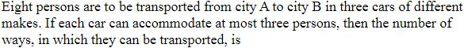
Hint 1: With at most 3 per car and 8 people in 3 cars, how must they split?
Hint 2: Only 3, 3, 2 in some order.
What this tests: Distributions into groups
1. Choose which car gets 2: 3 ways.
2. Split the people: 8!/(3! 3! 2!) = 560.
3. Total 1680.
Answer: (3)
If this felt hard: Revise Permutations and Combinations.
Claude’s answer: 3 · NTA final key: 3 · agrees · Answer recomputed by script (tools/verify_pyq_solutions.py)
Q6 · Mathematics · MCQ · ID 7155054137
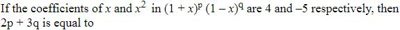
(1) 
Hint 1: Expand to x2 term by term.
Hint 2: Coefficient of x: p − q. Of x2: C(p,2) + C(q,2) − pq = ((p − q)2 − (p + q))/2.
What this tests: Binomial coefficients
1. p − q = 4.
2. (16 − (p + q))/2 = −5, so p + q = 26.
3. p = 15, q = 11: 2p + 3q = 63.
Answer: (2)
If this felt hard: Revise Binomial Theorem.
Claude’s answer: 2 · NTA final key: 2 · agrees · Answer recomputed with SymPy (tools/verify_pyq_solutions.py)
Q7 · Mathematics · MCQ · ID 7155054138
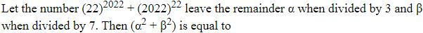
(1) 
(2) 
(3) 
(4) 
Hint 1: Reduce the bases first: 22 mod 3, 2022 mod 3, mod 7.
Hint 2: 22 ≡ 1 (mod 3, 7); 2022 ≡ 0 (mod 3), ≡ −1 (mod 7).
What this tests: Remainders
1. mod 3: 1 + 0 = 1, α = 1.
2. mod 7: 1 + (−1)22 = 2, β = 2.
3. α2 + β2 = 5.
Answer: (1)
If this felt hard: Revise Binomial Theorem (remainders).
Claude’s answer: 1 · NTA final key: 1 · agrees · Answer recomputed by script (tools/verify_pyq_solutions.py)
Q8 · Mathematics · MCQ · ID 7155054139
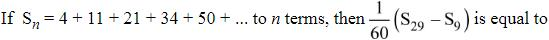
Hint 1: Differences: 7, 10, 13, 16: the nth term is quadratic.
Hint 2: an = (3n2 + 5n)/2.
What this tests: Series with quadratic terms
1. Sn = (1/2)(3Σn2 + 5Σn) = n(n + 1)(n + 3)/2.
2. S29 = 29 × 30 × 32/2 = 13920; S9 = 9 × 10 × 12/2 = 540.
3. (13920 − 540)/60 = 223.
Answer: (2)
If this felt hard: Revise Sequences and Series.
Claude’s answer: 2 · NTA final key: 2 · agrees · Answer recomputed with SymPy (tools/verify_pyq_solutions.py)
Q9 · Mathematics · MCQ · ID 7155054140
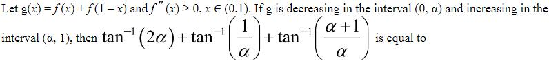
Hint 1: g'(x) = f'(x) − f'(1 − x). Since f'' > 0, f' is increasing.
Hint 2: g' < 0 when x < 1 − x.
What this tests: Monotonicity
1. g decreases on (0, 1/2), increases on (1/2, 1): α = 1/2.
2. tan−11 + tan−12 + tan−13 = π/4 + 3π/4 = π.
Answer: (4)
If this felt hard: Revise Application of Derivatives and Inverse Trigonometric Functions.
Claude’s answer: 4 · NTA final key: 4 · agrees · Answer recomputed by script (tools/verify_pyq_solutions.py)
Q10 · Mathematics · MCQ · ID 7155054141
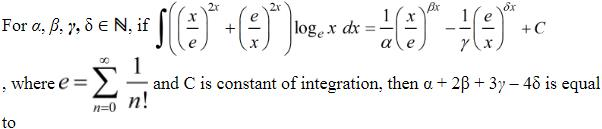
Hint 1: Differentiate (x/e)2x. What appears?
Hint 2: d/dx (x/e)2x = 2 ln x (x/e)2x; d/dx (e/x)2x = −2 ln x (e/x)2x.
What this tests: Integration by recognising derivatives
1. Integral = (1/2)(x/e)2x − (1/2)(e/x)2x + C.
2. α = β = γ = δ = 2.
3. α + 2β + 3γ − 4δ = 4.
Answer: (4)
If this felt hard: Revise Integrals.
Claude’s answer: 4 · NTA final key: 4 · agrees · Answer recomputed with SymPy (tools/verify_pyq_solutions.py)
Q11 · Mathematics · MCQ · ID 7155054142
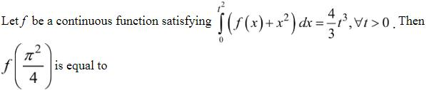
Hint 1: Differentiate both sides with respect to t (Leibniz rule).
Hint 2: (f(t2) + t4) × 2t = 4t2.
What this tests: Leibniz rule
1. f(t2) = 2t − t4.
2. t = π/2: f(π2/4) = π − π4/16 = π(1 − π3/16).
Answer: (4)
If this felt hard: Revise Integrals.
Claude’s answer: 4 · NTA final key: 4 · agrees · Answer recomputed with SymPy (tools/verify_pyq_solutions.py)
Q12 · Mathematics · MCQ · ID 7155054143
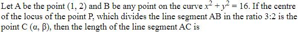
(4)
Hint 1: P = (3B + 2A)/5. As B moves on the circle, where is the centre of P's circle?
Hint 2: Centre C = 2A/5.
What this tests: Locus
1. C = (2/5, 4/5).
2. AC = (3/5)|OA| = 3√5/5.
Answer: (1)
If this felt hard: Revise Circles.
Claude’s answer: 1 · NTA final key: 1 · agrees · Answer recomputed with SymPy (tools/verify_pyq_solutions.py)
Q13 · Mathematics · MCQ · ID 7155054144
(1)
(2)
(3)
(4)
Hint 1: Topic: Common tangents. Which rule or fact from it settles this question?
Hint 2: Tangent y = mx + c to both: c2 = 19m2 + 15 and c2 = 16(1 + m2).
What this tests: Common tangents
1. 3m2 = 1, so the tangents make 30° with the x-axis (the major axis).
2. With the minor axis (the y-axis): 60° = π/3.
Answer: (1)
If this felt hard: Revise Conic Sections.
Claude’s answer: 1 · NTA final key: 1 · agrees · Answer recomputed with SymPy (tools/verify_pyq_solutions.py)
Q14 · Mathematics · MCQ · ID 7155054145
(1) 
(2)
(3)
(4) 
Hint 1: Find the plane's normal from AB × AC.
Hint 2: AB = (0, 2, 1), AC = (−1, 3, 1); normal (−1, −1, 2).
What this tests: Image of a point in a plane
1. Plane: x + y − 2z = 3.
2. For P: 1 + 2 − 12 − 3 = −12; Q = P + 4(1, 1, −2) = (5, 6, −2).
3. 25 + 36 + 4 = 65.
Answer: (2)
If this felt hard: Revise Three Dimensional Geometry.
Claude’s answer: 2 · NTA final key: 2 · agrees · Answer recomputed with SymPy (tools/verify_pyq_solutions.py)
Q15 · Mathematics · MCQ · ID 7155054146
(1)
(2)
(3) 
(4) 
Hint 1: Take a general point on the first line: (t, 6 − 2t, 5t − 8).
Hint 2: Equate with points on the other two lines.
What this tests: Intersection of lines
1. A = (1, 4, −3), B = (3, 0, 7).
2. Mid-point (2, 2, 2).
3. Distance = |4 − 4 + 2 − 14|/3 = 4.
Answer: (3)
If this felt hard: Note (6 − y)/2 means direction −2. Revise Three Dimensional Geometry.
Claude’s answer: 3 · NTA final key: 3 · agrees · Answer recomputed with SymPy (tools/verify_pyq_solutions.py)
Q16 · Mathematics · MCQ · ID 7155054147
(1) 
(2)
(3)
(4) 
Hint 1: d is parallel to a × b.
Hint 2: a × b = (35, −13, −21) and c·(a × b) = 6, so d = 2(a × b).
What this tests: Vector products
1. c × (a × b) = (47, 91, 22).
2. (−1, 1, −1)·(c × d) = 2(−47 + 91 − 22) = 44.
Answer: (3)
If this felt hard: Revise Vector Algebra.
Claude’s answer: 3 · NTA final key: 3 · agrees · Answer recomputed with SymPy (tools/verify_pyq_solutions.py)
Q17 · Mathematics · MCQ · ID 7155054148
(1)
(2)
(3)
(4)
Hint 1: Take the circumcentre P as the origin. Where is the orthocentre?
Hint 2: With P as origin, the orthocentre is a + b + c.
What this tests: Centres of a triangle with vectors
1. PA + PB + PC = PQ.
Answer: (3)
If this felt hard: Revise Vector Algebra.
Claude’s answer: 3 · NTA final key: 3 · agrees · Theory question: not computable, needs a teacher’s review
Q18 · Mathematics · MCQ · ID 7155054149
(1)
(2) 
(3)
(4) 
Hint 1: C(n,7) = C(n,9) fixes n.
Hint 2: n = 16.
What this tests: Binomial distribution
1. P(even exactly twice) = C(16,2)/216 = 120/216 = 60/215.
Answer: (3)
If this felt hard: Revise Probability.
Claude’s answer: 3 · NTA final key: 3 · agrees · Answer recomputed by script (tools/verify_pyq_solutions.py)
Q19 · Mathematics · MCQ · ID 7155054150
(1) 
(2) 
(3) 
(4) 
Hint 1: Use Σf = 62 to find k.
Hint 2: 3k2 + 4k − 2 = 62.
What this tests: Mean and variance
1. k = 4: frequencies 6, 8, 15, 15, 17, 1.
2. μ2 + σ2 = Σfx2/N = 500/62 ≈ 8.06.
3. [8.06] = 8.
Answer: (3)
If this felt hard: Notice μ2 + σ2 is the mean of x2. Revise Statistics.
Claude’s answer: 3 · NTA final key: 3 · agrees · Answer recomputed with SymPy (tools/verify_pyq_solutions.py)
Q20 · Mathematics · MCQ · ID 7155054151
(1)
(2)
(3)
(4)
Hint 1: Simplify with De Morgan.
Hint 2: ∼[p ∨ ∼(p ∧ q)] = ∼p ∧ (p ∧ q), which is always false.
What this tests: Logical equivalence
1. The statement is a contradiction.
2. (p ∧ q) ∧ (∼p) is also always false.
Answer: (3)
If this felt hard: Revise Mathematical Reasoning.
Claude’s answer: 3 · NTA final key: 3 · agrees · Answer recomputed by script (tools/verify_pyq_solutions.py)
Note: Mathematical reasoning is no longer in the JEE Main syllabus.
Q21 · Mathematics · Numerical · ID 7155054152
Hint 1: sec−1y needs |y| ≥ 1.
Hint 2: |2x| ≥ |5x + 3| gives 7x2 + 10x + 3 ≤ 0, and x ≠ −3/5.
What this tests: Domain of inverse trigonometric functions
1. Domain [−1, −3/5) ∪ (−3/5, −3/7].
2. |3(−1) + 10(−6/5) + 21(−3/7)| = |−3 − 12 − 9| = 24.
Answer: 24
If this felt hard: Revise Inverse Trigonometric Functions.
Claude’s answer: 24 · NTA final key: 24 · agrees · Answer recomputed with SymPy (tools/verify_pyq_solutions.py)
Q22 · Mathematics · Numerical · ID 7155054153
Hint 1: No solution needs the determinant to be 0 first.
Hint 2: Det = 12(λ − 1)(3λ + 1)(3λ + 2).
What this tests: Inconsistent systems
1. λ = 1, −1/3, −2/3; each makes the system inconsistent.
2. Σ|λ| = 2; 12 × 2 = 24.
Answer: 24
If this felt hard: Revise Determinants.
Claude’s answer: 24 · NTA final key: 24 · agrees · Answer recomputed with SymPy (tools/verify_pyq_solutions.py)
Q23 · Mathematics · Numerical · ID 7155054154
Hint 1: There are 4!/2! = 12 numbers. How often does each digit sit in each place?
Hint 2: In each place: 2 appears 6 times, 1 and 3 appear 3 times each.
What this tests: Sum of numbers formed
1. Sum per place = 6 × 2 + 3 × 1 + 3 × 3 = 24.
2. Total = 24 × 1111 = 26664.
Answer: 26664
If this felt hard: Revise Permutations and Combinations.
Claude’s answer: 26664 · NTA final key: 26664 · agrees · Answer recomputed by script (tools/verify_pyq_solutions.py)
Q24 · Mathematics · Numerical · ID 7155054155
Hint 1: Write the k-th term as (a + (k − 1)d)2k−1.
Hint 2: Third term: 4(a + 2d) = 2.
What this tests: Arithmetico-geometric progression
1. Sum: 31a + 98d = 49/2 with a + 2d = 1/2.
2. d = 1/4, a = 0.
3. a4 (fifth term) = (a + 4d) × 16 = 16.
Answer: 16
If this felt hard: Revise Sequences and Series.
Claude’s answer: 16 · NTA final key: 16 · agrees · Answer recomputed with SymPy (tools/verify_pyq_solutions.py)
Q25 · Mathematics · Numerical · ID 7155054156
Hint 1: Touching y = x at (1, 1) means f(x) = x + k(x − 1)2.
Hint 2: f(−1) = 0 gives k = 1/4.
What this tests: Tangents and normals
1. f(α) = α + 1 gives (α − 1)2 = 4, so α = 3 (first quadrant): point (3, 4).
2. f'(3) = 2; normal slope −1/2.
3. Normal meets y = 0 at x = 3 + 8 = 11.
Answer: 11
If this felt hard: Revise Application of Derivatives.
Claude’s answer: 11 · NTA final key: 11 · agrees · Answer recomputed with SymPy (tools/verify_pyq_solutions.py)
Q26 · Mathematics · Numerical · ID 7155054157
Hint 1: Sketch y = |x2 − 2| and y = x. Where do they meet?
Hint 2: x = 1 (with 2 − x2) and x = 2 (with x2 − 2); split at √2.
What this tests: Area between curves
1. A = ∫1√2(x − 2 + x2) dx + ∫√22(x − x2 + 2) dx = 9/2 − 8√2/3.
2. 6A + 16√2 = 27.
Answer: 27
If this felt hard: Revise Application of Integrals.
Claude’s answer: 27 · NTA final key: 27 · agrees · Answer recomputed with SymPy (tools/verify_pyq_solutions.py)
Q27 · Mathematics · Numerical · ID 7155054158
Hint 1: Find where the tangent meets the axes, then use the section formula with PA : PB = 1 : k.
Hint 2: This gives y' = −ky/x, so y = Cx−k.
What this tests: Differential equations from tangent properties
1. Through (1, 1) and (1/10, 100): y = x−2, k = 2.
2. ey' = 2x + 1: y = ((2x + 1)ln(2x + 1) − (2x + 1))/2 + 5/2 (y(0) = 2).
3. y(1) = 1 + (3/2)ln 3, so 4y(1) − 5 ln 3 = 4 + ln 3 ≈ 5.1 → 5.
Answer: 5
If this felt hard: Revise Differential Equations.
Claude’s answer: 5 · NTA final key: 5 · agrees · Answer recomputed with SymPy (tools/verify_pyq_solutions.py)
Note: Teacher look: the exact value is 4 + ln 3 ≈ 5.10; NTA's key gives the nearest integer, 5.
Q28 · Mathematics · Numerical · ID 7155054159
Hint 1: The two sides meet at a vertex (B or D). A and C are where each side meets the diagonal AC.
Hint 2: A = (−4, 5), C = (3, 2); B = (−1, 7).
What this tests: Parallelogram with lines
1. Mid-point of AC: (−1/2, 7/2). The other diagonal joins it to (−1, 7): 7x + y = 0.
2. d = |−28 + 5|/√50 = 23/√50.
3. 50d2 = 529.
Answer: 529
If this felt hard: Revise Straight Lines.
Claude’s answer: 529 · NTA final key: 529 · agrees · Answer recomputed with SymPy (tools/verify_pyq_solutions.py)
Q29 · Mathematics · Numerical · ID 7155054160
Hint 1: Find N, then use the right angle at N.
Hint 2: N = (3, 4, −1), AN = √6. B on P: α = 8 + 2β.
What this tests: Foot of perpendicular and area
1. Area = (1/2)√6 × NB = 3√2, so NB2 = 12.
2. 4 + (4 + 2β)2 + (β + 1)2 = 12 gives β = −3 (integer), α = 2.
3. α2 + β2 + αβ = 4 + 9 − 6 = 7.
Answer: 7
If this felt hard: Revise Three Dimensional Geometry.
Claude’s answer: 7 · NTA final key: 7 · agrees · Answer recomputed with SymPy (tools/verify_pyq_solutions.py)
Q30 · Mathematics · Numerical · ID 7155054161
Hint 1: Let AB = a, AC = h. Write BE using θ2 = π/2 − θ1.
Hint 2: BE = h + a2/h, and √3(h2 + a2) = 4ah.
What this tests: Heights and triangles
1. h/a = 1/√3 or √3; θ2/θ1 largest for θ1 = 30°.
2. Area (1/2)ah = 2√3 − 3 gives a = 3 − √3.
3. Triangle CED: CD = a, DE = √3a, CE = 2a: perimeter (3 + √3)a = 6.
Answer: 6
If this felt hard: Revise Trigonometric Functions.
Claude’s answer: 6 · NTA final key: 6 · agrees · Answer recomputed with SymPy (tools/verify_pyq_solutions.py)
Note: Figure reading: ACDB is a rectangle, E above D on line BD, θ_{1} at B, θ_{2} at C.
Q31 · Physics · MCQ · ID 7155054162
(1) 
(2) 
(3) 
(4) 
Hint 1: A metal sheet reduces the effective gap.
Hint 2: C = ε0A/(d − t).
What this tests: Capacitor with a metal slab
1. d − 2d/3 = d/3, so C2 = 3C1.
Answer: (3)
If this felt hard: Revise Electrostatic Potential and Capacitance.
Claude’s answer: 3 · NTA final key: 3 · agrees · Answer recomputed by script (tools/verify_pyq_solutions.py)
Q32 · Physics · MCQ · ID 7155054163
(1)
(2) 
(3)
(4) 
Hint 1: Combine into one sine.
Hint 2: sin ωt + cos ωt = √2 sin(ωt + π/4).
What this tests: SHM
1. Amplitude √2.
Answer: (3)
If this felt hard: Revise Oscillations.
Claude’s answer: 3 · NTA final key: 3 · agrees · Answer recomputed by script (tools/verify_pyq_solutions.py)
Q33 · Physics · MCQ · ID 7155054164
(1)
(2)
(3)
(4)
Hint 1: U = (f/2)nRT for each gas.
Hint 2: O2: f = 5; Ne: f = 3.
What this tests: Internal energy of mixtures
1. 2 × 5/2 RT + 4 × 3/2 RT = 5RT + 6RT = 11RT.
Answer: (3)
If this felt hard: Revise Kinetic Theory.
Claude’s answer: 3 · NTA final key: 3 · agrees · Answer recomputed by script (tools/verify_pyq_solutions.py)
Q34 · Physics · MCQ · ID 7155054165
(1)
(2)
(3)
(4)
Hint 1: Topic: Adiabatic process. Which rule or fact from it settles this question?
Hint 2: Adiabatic: Q = 0, so ΔU = W on the gas.
What this tests: Adiabatic process
1. Work is done on the gas, so U increases. 'No change in internal energy' is NOT true.
Answer: (3)
If this felt hard: Revise Thermodynamics.
Claude’s answer: 3 · NTA final key: 3 · agrees · Theory question: not computable, needs a teacher’s review
Q35 · Physics · MCQ · ID 7155054166
(1)
(2)
(3)
(4)
Hint 1: ΔL = FL/(AY).
Hint 2: ΔL ∝ 1/(AY).
What this tests: Young's modulus
1. ΔLA : ΔLB = 1/(1 × 1) : 1/(3 × 4) = 12 : 1.
Answer: (3)
If this felt hard: Revise Mechanical Properties of Solids.
Claude’s answer: 3 · NTA final key: 3 · agrees · Answer recomputed by script (tools/verify_pyq_solutions.py)
Q36 · Physics · MCQ · ID 7155054167
(1) 
(2) 
(3) 
(4) 
Hint 1: g' = g − ω2R cos2λ.
Hint 2: Where is the rotation effect largest?
What this tests: Effect of rotation on g
1. I true.
2. II false: the effect is largest at the equator and zero at the poles.
Answer: (3)
If this felt hard: Revise Gravitation.
Claude’s answer: 3 · NTA final key: 3 · agrees · Theory question: not computable, needs a teacher’s review
Q37 · Physics · MCQ · ID 7155054168
(1)
(2)
(3)
(4)
Hint 1: Topic: Satellite period. Which rule or fact from it settles this question?
Hint 2: T = 2π√(r3/GM) with r = 2R and GM = gR2.
What this tests: Satellite period
1. T = 2π√(8R/g) = 2π√(8R/π2) = 2√(8R) = √(32R).
Answer: (4)
If this felt hard: Revise Gravitation.
Claude’s answer: 4 · NTA final key: 4 · agrees · Answer recomputed by script (tools/verify_pyq_solutions.py)
Q38 · Physics · MCQ · ID 7155054169
(1) 
(2)
(3)
(4)
Hint 1: Topic: Projectile height. Which rule or fact from it settles this question?
Hint 2: H = u2sin2θ/2g.
What this tests: Projectile height
1. sin230° : sin260° = 1/4 : 3/4 = 1 : 3.
Answer: (1)
If this felt hard: Revise Motion in a Plane.
Claude’s answer: 1 · NTA final key: 1 · agrees · Answer recomputed by script (tools/verify_pyq_solutions.py)
Q39 · Physics · MCQ · ID 7155054170
(1)
(2)
(3)
(4)
Hint 1: Vernier zero to the right means a positive zero error.
Hint 2: Zero error = 6 × 0.1 mm = 0.06 cm.
What this tests: Vernier callipers
1. Reading = 3.2 + 4 × 0.01 = 3.24 cm.
2. Corrected = 3.24 − 0.06 = 3.18 cm.
Answer: (4)
If this felt hard: Revise Units and Measurements (experimental skills).
Claude’s answer: 4 · NTA final key: 4 · agrees · Answer recomputed by script (tools/verify_pyq_solutions.py)
Q40 · Physics · MCQ · ID 7155054171
(1)
(2)
(3)
(4)
Hint 1: Average velocity = total distance/total time.
Hint 2: Time = x/v1 + x/v2.
What this tests: Average velocity
1. v = 2x/(x/v1 + x/v2): 2/v = 1/v1 + 1/v2.
Answer: (4)
If this felt hard: Revise Motion in a Straight Line.
Claude’s answer: 4 · NTA final key: 4 · agrees · Theory question: not computable, needs a teacher’s review
Q41 · Physics · MCQ · ID 7155054172
(1)
(2)
(3)
(4)
Hint 1: Topic: Inertia of motion. Which rule or fact from it settles this question?
Hint 2: Why does the fan keep turning?
What this tests: Inertia of motion
1. Rotational inertia keeps it moving: both true, R explains A.
Answer: (1)
If this felt hard: Revise Laws of Motion.
Claude’s answer: 1 · NTA final key: 1 · agrees · Theory question: not computable, needs a teacher’s review
Q42 · Physics · MCQ · ID 7155054173
(1)
(2)
(3)
(4)
Hint 1: Topic: AM bandwidth. Which rule or fact from it settles this question?
Hint 2: AM bandwidth = 2fm.
What this tests: AM bandwidth
1. 2 × 3 kHz = 6 kHz.
Answer: (4)
If this felt hard: Revise Communication Systems.
Claude’s answer: 4 · NTA final key: 4 · agrees · Answer recomputed by script (tools/verify_pyq_solutions.py)
Note: Communication systems is no longer in the JEE Main syllabus.
Q43 · Physics · MCQ · ID 7155054174
(1)
(2)
(3)
(4)
Hint 1: Which diodes are forward biased? Treat each as 25 Ω when on.
Hint 2: D1, D3 on (150 Ω branches), D2 off.
What this tests: Diode circuits
1. Branches in parallel: 75 Ω; plus 25 Ω: 100 Ω. I1 = 0.05 A.
2. I2 = I4 = 0.025 A, I3 = 0.
3. I1/I2 = 2.
Answer: (4)
If this felt hard: Revise Semiconductor Electronics.
Claude’s answer: 4 · NTA final key: 4 · agrees · Answer recomputed by script (tools/verify_pyq_solutions.py)
Note: Figure reading: I_{4} in D_{1}'s branch, I_{3} in D_{2}'s, I_{2} in D_{3}'s.
Q44 · Physics · MCQ · ID 7155054175
(1)
(2)
(3)
(4)
Hint 1: 7/8 decayed means 1/8 left.
Hint 2: (1/2)3 = 1/8.
What this tests: Half-life
1. 3 half-lives: 3T.
Answer: (3)
If this felt hard: Revise Nuclei.
Claude’s answer: 3 · NTA final key: 3 · agrees · Answer recomputed by script (tools/verify_pyq_solutions.py)
Q45 · Physics · MCQ · ID 7155054176
(1)
(2)
(3)
(4)
Hint 1: Read the threshold frequency from the graph.
Hint 2: φ = hν0.
What this tests: Photoelectric effect
1. ν0 = 5 × 1014 Hz.
2. φ = 6.63 × 10−34 × 5 × 1014/1.6 × 10−19 = 2.07 eV.
Answer: (3)
If this felt hard: Revise Dual Nature of Radiation and Matter.
Claude’s answer: 3 · NTA final key: 3 · agrees · Answer recomputed by script (tools/verify_pyq_solutions.py)
Q46 · Physics · MCQ · ID 7155054177
(1)
(2)
(3)
(4)
Hint 1: Eddy currents in the tube oppose the motion.
Hint 2: The drag grows with speed.
What this tests: Eddy currents
1. The magnet reaches an almost constant (terminal) speed.
Answer: (3)
If this felt hard: Revise Electromagnetic Induction.
Claude’s answer: 3 · NTA final key: 3 · agrees · Theory question: not computable, needs a teacher’s review
Q47 · Physics · MCQ · ID 7155054178
(1)
(2)
(3) 
(4)
Hint 1: Topic: Interference intensity. Which rule or fact from it settles this question?
Hint 2: I = 4I0cos2(φ/2).
What this tests: Interference intensity
1. cos2(π/6) : cos2(π/4) = 3/4 : 1/2 = 3 : 2.
Answer: (1)
If this felt hard: Revise Wave Optics.
Claude’s answer: 1 · NTA final key: 1 · agrees · Answer recomputed by script (tools/verify_pyq_solutions.py)
Q48 · Physics · MCQ · ID 7155054179
(1)
(2)
(3)
(4)
Hint 1: Topic: EM waves. Which rule or fact from it settles this question?
Hint 2: E0 = cB0.
What this tests: EM waves
1. 3 × 108 × 6 × 10−7 = 180 V/m.
Answer: (2)
If this felt hard: Revise Electromagnetic Waves.
Claude’s answer: 2 · NTA final key: 2 · agrees · Answer recomputed by script (tools/verify_pyq_solutions.py)
Q49 · Physics · MCQ · ID 7155054180
(1) 
(2)
(3)
(4) 
Hint 1: Topic: Diamagnetism. Which rule or fact from it settles this question?
Hint 2: Recall the properties of diamagnetic materials.
What this tests: Diamagnetism
1. −1 ≤ χ < 0 and they move to weaker fields: both true.
Answer: (1)
If this felt hard: Revise Magnetism and Matter.
Claude’s answer: 1 · NTA final key: 1 · agrees · Theory question: not computable, needs a teacher’s review
Q50 · Physics · MCQ · ID 7155054181
(1)
(2)
(3)
(4)
Hint 1: Electrons are negative: which way do they drift? Do they move in straight lines?
Hint 2: Collisions keep changing their paths.
What this tests: Drift of electrons
1. They drift from lower to higher potential along curved (zig-zag) paths between collisions.
Answer: (4)
If this felt hard: Revise Current Electricity.
Claude’s answer: 4 · NTA final key: 4 · agrees · Theory question: not computable, needs a teacher’s review
Q51 · Physics · Numerical · ID 7155054182
Hint 1: Fmax = kA = mω2A.
Hint 2: ω = 2π/3.14 = 2 rad/s.
What this tests: SHM
1. F = 5 × 4 × 1 = 20 N.
Answer: 20
If this felt hard: Revise Oscillations.
Claude’s answer: 20 · NTA final key: 20 · agrees · Answer recomputed by script (tools/verify_pyq_solutions.py)
Q52 · Physics · Numerical · ID 7155054183
Hint 1: Continuity: A1v1 = A2v2.
Hint 2: 2 cm2 = 200 mm2.
What this tests: Equation of continuity
1. v = 200 × 4/10 = 80 cm/s.
Answer: 80
If this felt hard: Revise Mechanical Properties of Fluids.
Claude’s answer: 80 · NTA final key: 80 · agrees · Answer recomputed by script (tools/verify_pyq_solutions.py)
Q53 · Physics · Numerical · ID 7155054184
Hint 1: τ = r × F, with r from the point to where the force acts.
Hint 2: r = (0, 0, 0) − (2, −3, 0) = (−2, 3, 0).
What this tests: Torque
1. τ = (−2, 3, 0) × (0, 0, −P) = P(−3, −2, 0).
2. a/b = 3/2 = x/2, so x = 3.
Answer: 3
If this felt hard: Revise System of Particles and Rotational Motion.
Claude’s answer: 3 · NTA final key: 3 · agrees · Answer recomputed with SymPy (tools/verify_pyq_solutions.py)
Q54 · Physics · Numerical · ID 7155054185
Hint 1: At uniform speed the motor force balances weight + friction.
Hint 2: P = Fv.
What this tests: Power
1. F = 14000 + 2000 = 16000 N.
2. P = 16000 × 3 = 48 kW.
Answer: 48
If this felt hard: Revise Work, Energy and Power.
Claude’s answer: 48 · NTA final key: 48 · agrees · Answer recomputed by script (tools/verify_pyq_solutions.py)
Q55 · Physics · Numerical · ID 7155054186
Hint 1: Field of a line charge E = λ/(2πε0r) supplies the centripetal force.
Hint 2: mv2/r = eλ/(2πε0r): v is independent of r.
What this tests: Line charge
1. v2 = 2keλ/m = 2 × 9 × 109 × 1.6 × 10−19 × 2 × 10−8/9 × 10−31 = 6.4 × 1013.
2. v = 8 × 106 m/s.
Answer: 8
If this felt hard: Revise Electric Charges and Fields.
Claude’s answer: 8 · NTA final key: 8 · agrees · Answer recomputed by script (tools/verify_pyq_solutions.py)
Q56 · Physics · Numerical · ID 7155054187
Hint 1: Lowest wavelength = series limit.
Hint 2: Lyman: 1/λ = R. Balmer: 1/λ = R/4.
What this tests: Hydrogen spectrum
1. λBalmer = 4 × 917 = 3668 Å.
Answer: 3668
If this felt hard: Revise Atoms.
Claude’s answer: 3668 · NTA final key: 3668 · agrees · Answer recomputed by script (tools/verify_pyq_solutions.py)
Q57 · Physics · Numerical · ID 7155054188
Hint 1: Image by L1 becomes the object for L2.
Hint 2: L1: u = −6, f = 24.
What this tests: Lens combinations
1. L1: 1/v = 1/24 − 1/6, v = −8 cm (8 cm left of L1).
2. L2: u = −18 cm, f = 9: v = 18 cm.
3. Object to image = 6 + 10 + 18 = 34 cm.
Answer: 34
If this felt hard: Revise Ray Optics.
Claude’s answer: 34 · NTA final key: 34 · agrees · Answer recomputed by script (tools/verify_pyq_solutions.py)
Q58 · Physics · Numerical · ID 7155054189
Hint 1: B = μ0nI; emf amplitude = B0Aω.
Hint 2: n = 5000 per m, A = 4 × 10−4 m2.
What this tests: Faraday's law
1. emf = 4π × 10−7 × 5000 × 2.5 × 4 × 10−4 × 700.
2. = 4.4 × 10−3 V = 44 × 10−4 V.
Answer: 44
If this felt hard: Revise Electromagnetic Induction.
Claude’s answer: 44 · NTA final key: 44 · agrees · Answer recomputed by script (tools/verify_pyq_solutions.py)
Q59 · Physics · Numerical · ID 7155054190
Hint 1: Straight parts lie on a line through O. Only the arc counts.
Hint 2: B = μ0I/(4R).
What this tests: Field of an arc
1. B = 4π × 10−7 × 14/(4 × 0.022) = 2 × 10−4 T.
Answer: 2
If this felt hard: Revise Moving Charges and Magnetism.
Claude’s answer: 2 · NTA final key: 2 · agrees · Answer recomputed by script (tools/verify_pyq_solutions.py)
Q60 · Physics · Numerical · ID 7155054191
Hint 1: The rectangular faces are 1 cm × 100 cm and are 1 cm apart.
Hint 2: R = ρL/A.
What this tests: Resistance
1. R = 3 × 10−7 × 0.01/(0.01 × 1) = 3 × 10−7 Ω.
Answer: 3
If this felt hard: Revise Current Electricity.
Claude’s answer: 3 · NTA final key: 3 · agrees · Answer recomputed by script (tools/verify_pyq_solutions.py)
Q61 · Chemistry · MCQ · ID 7155054192
(1)
(2) 
(3) 
(4) 
Hint 1: Topic: Mole concept. Which rule or fact from it settles this question?
Hint 2: Convert each to moles.
What this tests: Mole concept
1. 16 g CH4 = 1 mol, 10 electrons each: 60.2 × 1023 (II).
2. 1 g H2 = 0.5 mol: 11.4 L (IV).
3. 1 mol N2 = 28 g (I). 0.5 mol SO2 = 32 g (III).
Answer: (2)
If this felt hard: Revise Some Basic Concepts of Chemistry.
Claude’s answer: 2 · NTA final key: 2 · agrees · Answer recomputed by script (tools/verify_pyq_solutions.py)
Note: Uses 22.7 L/mol at STP (1 bar).
Q62 · Chemistry · MCQ · ID 7155054193
(1)
(2)
(3)
(4)
Hint 1: Topic: Cubic unit cells. Which rule or fact from it settles this question?
Hint 2: Atoms touch along the face diagonal (fcc) and body diagonal (bcc).
What this tests: Cubic unit cells
1. fcc: 4r = √2a, i.e. 2√2r = a. bcc: 4r = √3a.
Answer: (1)
If this felt hard: Revise The Solid State.
Claude’s answer: 1 · NTA final key: 1 · agrees · Theory question: not computable, needs a teacher’s review
Note: Solid state is no longer in the JEE Main syllabus.
Q63 · Chemistry · MCQ · ID 7155054194
(1)
(2)
(3)
(4)
Hint 1: Blood is a negatively charged sol.
Hint 2: Highly charged cations coagulate negative sols.
What this tests: Coagulation
1. Fe3+ coagulates blood.
Answer: (3)
If this felt hard: Revise Surface Chemistry.
Claude’s answer: 3 · NTA final key: 3 · agrees · Theory question: not computable, needs a teacher’s review
Note: Surface chemistry is no longer in the JEE Main syllabus.
Q64 · Chemistry · MCQ · ID 7155054195
(1)
(2)
(3)
(4)
Hint 1: Topic: Periodic trends. Which rule or fact from it settles this question?
Hint 2: Metallic character increases down a group and decreases across a period.
What this tests: Periodic trends
1. K > Ca > Be.
Answer: (1)
If this felt hard: Revise Classification of Elements.
Claude’s answer: 1 · NTA final key: 1 · agrees · Theory question: not computable, needs a teacher’s review
Q65 · Chemistry · MCQ · ID 7155054196
(1)
(2)
(3)
(4)
Hint 1: On an Ellingham diagram, a lower line can reduce the oxide of a higher line.
Hint 2: Compare the lines at 600 °C.
What this tests: Ellingham diagram
1. At 600 °C the C → CO2 line is below the Fe → FeO line, so C reduces FeO.
2. ZnO's line is lowest, so neither C nor CO reduces it there.
Answer: (1)
If this felt hard: Revise General Principles of Isolation of Elements.
Claude’s answer: 1 · NTA final key: 1 · agrees · Theory question: not computable, needs a teacher’s review
Note: Figure reading at 600 °C. Metallurgy is no longer in the JEE Main syllabus.
Q66 · Chemistry · MCQ · ID 7155054197
(1)
(2)
(3) 
(4)
Hint 1: Topic: Isotopes of hydrogen. Which rule or fact from it settles this question?
Hint 2: Why do H2, D2, T2 differ physically?
What this tests: Isotopes of hydrogen
1. The large relative mass difference explains the different physical properties.
Answer: (1)
If this felt hard: Revise Hydrogen.
Claude’s answer: 1 · NTA final key: 1 · agrees · Theory question: not computable, needs a teacher’s review
Q67 · Chemistry · MCQ · ID 7155054198
(1)
(2)
(3)
(4)
Hint 1: Topic: Sodium carbonate. Which rule or fact from it settles this question?
Hint 2: Washing soda: Na2CO3·10H2O. Soda ash: anhydrous.
What this tests: Sodium carbonate
1. 10 and 0.
Answer: (3)
If this felt hard: Revise The s-Block Elements.
Claude’s answer: 3 · NTA final key: 3 · agrees · Theory question: not computable, needs a teacher’s review
Note: s-block is no longer in the JEE Main syllabus.
Q68 · Chemistry · MCQ · ID 7155054199
(1) 
(2)
(3) 
(4) 
Hint 1: Topic: Ionisation enthalpy. Which rule or fact from it settles this question?
Hint 2: Why is the second ionisation enthalpy much larger?
What this tests: Ionisation enthalpy
1. Removing an electron from a smaller, more positive ion takes more energy: both true, R explains A.
Answer: (1)
If this felt hard: Revise Classification of Elements.
Claude’s answer: 1 · NTA final key: 1 · agrees · Theory question: not computable, needs a teacher’s review
Q69 · Chemistry · MCQ · ID 7155054200
(1)
(2)
(3)
(4)
Hint 1: Count unpaired electrons in each.
Hint 2: Fe3+ d5: CN− low spin (1), F− high spin (5). Co3+ d6 with F−: 4. Cr3+ d3: 3. Ni(CO)4: 0.
What this tests: Unpaired electrons
1. E (0) < A (1) < D (3) < C (4) < B (5).
Answer: (3)
If this felt hard: Revise Coordination Compounds.
Claude’s answer: 3 · NTA final key: 3 · agrees · Theory question: not computable, needs a teacher’s review
Q70 · Chemistry · MCQ · ID 7155054201
(1)
(2) 
(3) 
(4)
Hint 1: CFSE = (−0.4x + 0.6y)Δ0 for t2gxegy.
Hint 2: Ti2+ d2, V2+ d3, Mn3+ d4 (high spin), Fe3+ d5 (high spin).
What this tests: Crystal field stabilisation energy
1. A −0.8 (IV), B −1.2 (I), C −0.6 (II), D 0 (III).
Answer: (1)
If this felt hard: Revise Coordination Compounds.
Claude’s answer: 1 · NTA final key: 1 · agrees · Theory question: not computable, needs a teacher’s review
Q71 · Chemistry · MCQ · ID 7155054202
(1)
(2)
(3)
(4)
Hint 1: Topic: Carbon–oxygen balance. Which rule or fact from it settles this question?
Hint 2: Which process is part of the natural cycle?
What this tests: Carbon–oxygen balance
1. Respiration is balanced by photosynthesis.
Answer: (4)
If this felt hard: Revise Environmental Chemistry.
Claude’s answer: 4 · NTA final key: 4 · agrees · Theory question: not computable, needs a teacher’s review
Note: Environmental chemistry is no longer in the JEE Main syllabus.
Q72 · Chemistry · MCQ · ID 7155054203
(1)
(2)
(3)
(4)
Hint 1: BaCl2 precipitates which acid's anion?
Hint 2: BaSO4: sulphur estimation.
What this tests: Estimation of sulphur
1. X contains sulphur: methionine.
Answer: (2)
If this felt hard: Revise Organic Chemistry: Some Basic Principles.
Claude’s answer: 2 · NTA final key: 2 · agrees · Theory question: not computable, needs a teacher’s review
Q73 · Chemistry · MCQ · ID 7155054204
(1)
(2)
(3)
(4)
Hint 1: Hydride affinity is high for unstable carbocations.
Hint 2: Stability: tricyclopropylmethyl > trityl > allylic tertiary > t-butyl.
What this tests: Carbocation stability
1. Hydride affinity: C > A > B > D.
Answer: (1)
If this felt hard: Revise Organic Chemistry: Some Basic Principles.
Claude’s answer: 1 · NTA final key: 1 · agrees · Theory question: not computable, needs a teacher’s review
Note: Tricyclopropylmethyl cation stability goes beyond NCERT.
Q74 · Chemistry · MCQ · ID 7155054205
(1)
(2)
(3)
(4)
Hint 1: AlCl3 makes a carbocation at the C–Cl carbon. Which ring size can form?
Hint 2: Intramolecular Friedel–Crafts alkylation closes a six-membered ring.
What this tests: Intramolecular Friedel–Crafts
1. The secondary cation attacks the ring ortho to the chain.
2. Product: tetralin with CH3 at the benzylic ring carbon, OMe and NO2 kept.
Answer: (1)
If this felt hard: Revise Hydrocarbons (Friedel–Crafts).
Claude’s answer: 1 · NTA final key: 1 · agrees · Theory question: not computable, needs a teacher’s review
Q75 · Chemistry · MCQ · ID 7155054206
(1)
(2)
(3)
(4)
Hint 1: Topic: Preparation of alcohols. Which rule or fact from it settles this question?
Hint 2: Which of these gives aldehydes/ketones rather than alcohols?
What this tests: Preparation of alcohols
1. Ozonolysis of alkenes gives carbonyl compounds.
Answer: (3)
If this felt hard: Revise Alcohols, Phenols and Ethers.
Claude’s answer: 3 · NTA final key: 3 · agrees · Theory question: not computable, needs a teacher’s review
Q76 · Chemistry · MCQ · ID 7155054207
(1)
(2)
(3)
(4)
Hint 1: Topic: Acidity of hydroxyl compounds. Which rule or fact from it settles this question?
Hint 2: Phenols are more acidic than alcohols; EWG increases acidity.
What this tests: Acidity of hydroxyl compounds
1. p-nitrophenol > phenol > p-methoxyphenol > methanol > t-butanol.
Answer: (1)
If this felt hard: Revise Alcohols, Phenols and Ethers.
Claude’s answer: 1 · NTA final key: 1 · agrees · Theory question: not computable, needs a teacher’s review
Q77 · Chemistry · MCQ · ID 7155054208
(1)
(2)
(3)
(4)
Hint 1: What does LiAlH4 reduce: amide, ketone, isolated C=C?
Hint 2: CONH2 → CH2NH2; C=O → CH–OH; isolated C=C untouched.
What this tests: LiAlH4 reductions
1. Amine, alcohol and the alkene remain.
Answer: (2)
If this felt hard: Revise Amines and Aldehydes, Ketones.
Claude’s answer: 2 · NTA final key: 2 · agrees · Theory question: not computable, needs a teacher’s review
Q78 · Chemistry · MCQ · ID 7155054209
(1)
(2)
(3)
(4)
Hint 1: Topic: Buna-S. Which rule or fact from it settles this question?
Hint 2: Buna-S = butadiene + styrene.
What this tests: Buna-S
1. –[CH2–CH=CH–CH2–CH2–CH(C6H5)]n–.
Answer: (4)
If this felt hard: Revise Polymers.
Claude’s answer: 4 · NTA final key: 4 · agrees · Theory question: not computable, needs a teacher’s review
Note: Polymers are no longer in the JEE Main syllabus.
Q79 · Chemistry · MCQ · ID 7155054210
(1)
(2)
(3)
(4)
Hint 1: Topic: Saponification. Which rule or fact from it settles this question?
Hint 2: What does NaOH do to an ester (fat)?
What this tests: Saponification
1. Saponification: alkaline hydrolysis.
Answer: (2)
If this felt hard: Revise Chemistry in Everyday Life.
Claude’s answer: 2 · NTA final key: 2 · agrees · Theory question: not computable, needs a teacher’s review
Q80 · Chemistry · MCQ · ID 7155054211
(1)
(2)
(3)
(4)
Hint 1: Moles = mass/molar mass of H2C2O4·2H2O.
Hint 2: M = 126 g/mol.
What this tests: Molarity
1. 3.15/126 = 0.025 mol in 0.25 L = 0.1 M.
2. Both true, R explains A.
Answer: (1)
If this felt hard: Revise Some Basic Concepts of Chemistry.
Claude’s answer: 1 · NTA final key: 1 · agrees · Answer recomputed by script (tools/verify_pyq_solutions.py)
Q81 · Chemistry · Numerical · ID 7155054212
Hint 1: ΔE = RHZ2(1/n2 − 1/(n + 1)2).
Hint 2: Z = 3.
What this tests: Bohr model for ions
1. 1/n2 − 1/(n + 1)2 = 1.47 × 10−17/(9 × 2.18 × 10−18) = 0.75.
2. n = 1.
Answer: 1
If this felt hard: Revise Structure of Atom.
Claude’s answer: 1 · NTA final key: 1 · agrees · Answer recomputed by script (tools/verify_pyq_solutions.py)
Q82 · Chemistry · Numerical · ID 7155054213
Hint 1: Draw each Lewis structure and count lone pairs.
Hint 2: H2O, N2, CO each have 2 lone pairs. XeF4 has 2 on Xe.
What this tests: Lone pairs
1. H2O, N2, CO: two lone pairs.
2. XeF4: two lone pairs on the central Xe.
3. Count 4.
Answer: 4
If this felt hard: Revise Chemical Bonding.
Claude’s answer: 4 · NTA final key: 4 · agrees · Theory question: not computable, needs a teacher’s review
Note: Teacher look: NTA's 4 counts XeF_{4} by its central atom (2 lone pairs) while N_{2} and CO are counted as whole molecules; counting every lone pair, only H_{2}O, N_{2}, CO qualify (3).
Q83 · Chemistry · Numerical · ID 7155054214
Hint 1: Topic: Endothermic processes. Which rule or fact from it settles this question?
Hint 2: Breaking bonds and vaporising need energy.
What this tests: Endothermic processes
1. A, B, C endothermic; E (NH4Cl dissolves with cooling) endothermic.
2. D (combustion) exothermic.
Answer: 4
If this felt hard: Revise Thermodynamics.
Claude’s answer: 4 · NTA final key: 4 · agrees · Theory question: not computable, needs a teacher’s review
Q84 · Chemistry · Numerical · ID 7155054215
Hint 1: π = (n/V)RT.
Hint 2: n = πV/RT.
What this tests: Osmotic pressure
1. n = 1.29 × 10−3 × 0.3/(0.083 × 300) = 1.554 × 10−5 mol.
2. M = 0.63/1.554 × 10−5 = 40535 g/mol.
Answer: 40535
If this felt hard: Revise Solutions.
Claude’s answer: 40535 · NTA final key: 40535 · agrees · Answer recomputed by script (tools/verify_pyq_solutions.py)
Q85 · Chemistry · Numerical · ID 7155054216
Hint 1: A → 2B + C: pressure rises by 2x for x of A used.
Hint 2: 450 + 2x = 720.
What this tests: Kinetics with pressure
1. x = 135 mm Hg.
2. Fraction = 135/450 = 0.3 = 3 × 10−1.
Answer: 3
If this felt hard: Revise Chemical Kinetics.
Claude’s answer: 3 · NTA final key: 3 · agrees · Answer recomputed by script (tools/verify_pyq_solutions.py)
Q86 · Chemistry · Numerical · ID 7155054217
Hint 1: Topic: Ostwald's dilution law. Which rule or fact from it settles this question?
Hint 2: Λm = 1000κ/C, α = Λm/Λ°m.
What this tests: Ostwald's dilution law
1. Λm = 1000 × 5 × 10−5/0.0025 = 20, α = 0.05.
2. Ka = Cα2/(1 − α) = 6.25 × 10−6/0.95 = 65.8 × 10−7 ≈ 66.
Answer: 66
If this felt hard: Revise Electrochemistry.
Claude’s answer: 66 · NTA final key: 66 · agrees · Answer recomputed by script (tools/verify_pyq_solutions.py)
Q87 · Chemistry · Numerical · ID 7155054218
Hint 1: Check each statement against kinetics basics.
Hint 2: Zero order: t1/2 = [A]0/2k.
What this tests: Order and molecularity
1. A true, B true, D true.
2. C false: molecularity is always a whole number.
Answer: 1
If this felt hard: Revise Chemical Kinetics.
Claude’s answer: 1 · NTA final key: 1 · agrees · Theory question: not computable, needs a teacher’s review
Q88 · Chemistry · Numerical · ID 7155054219
Hint 1: What does XeF4 give on complete hydrolysis?
Hint 2: 6XeF4 + 12H2O → 4Xe + 2XeO3 + 24HF + 3O2.
What this tests: Xenon compounds
1. Oxidised product XeO3: +6. XeF4: +4.
2. Difference 2.
Answer: 2
If this felt hard: Revise The p-Block Elements.
Claude’s answer: 2 · NTA final key: 2 · agrees · Theory question: not computable, needs a teacher’s review
Q89 · Chemistry · Numerical · ID 7155054220
Hint 1: μ = √(n(n + 2)).
Hint 2: 4.90 = √24.
What this tests: Magnetic moment
1. n = 4.
Answer: 4
If this felt hard: Revise Coordination Compounds.
Claude’s answer: 4 · NTA final key: 4 · agrees · Answer recomputed by script (tools/verify_pyq_solutions.py)
Q90 · Chemistry · Numerical · ID 7155054221
Hint 1: What does MnO4− become in alkaline (or neutral) medium?
Hint 2: MnO4− + 2H2O + 3e− → MnO2 + 4OH−.
What this tests: Permanganate
1. 3 electrons.
Answer: 3
If this felt hard: Revise The d- and f-Block Elements.
Claude’s answer: 3 · NTA final key: 3 · agrees · Theory question: not computable, needs a teacher’s review
Note: In strongly alkaline solution MnO_{4}^{−} can also give MnO_{4}^{2−} (1 electron); NTA follows NCERT's MnO_{2}.